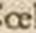
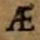

Level 2
Both the consonant ligatures (tz, ct, ts, ff etc.) as well as the ligature ij and the ligatures commonly used in German-language texts such as fi, fl, ft, their derivatives, as well as fk, fj, fh, fb, fz, ll, mm, nn, st, ch, ck, ct, th, tt, tz, kk, Qu, ſi, ſſ, ſt, ſch are always to be split.
In order to recognize split ligatures in Ground-Truth, these ligatures are regarded as typographical peculiarities and labelled accordingly.
Vocal ligatures are always transcribed as one sign:
| Original | Character | Entity | Description |
|---|---|---|---|
 |
æ | U+00E6 |
LATIN SMALL LETTER AE |
|  | œ | U+0153 |
LATIN SMALL LIGATURE OE |
|  | Æ | U+00C6 |
LATIN CAPITAL LETTER AE |
 |
Π| U+0152 |
LATIN CAPITAL LIGATURE OE |